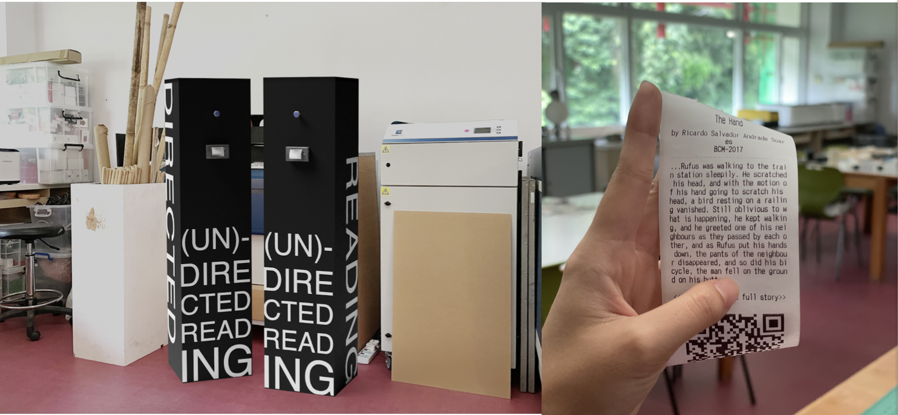

About the Kiosk...
Inspired by the book (Un)Directed Reading 2021, this interactive installation is a kiosk proposed as a companion of the book and will be placed at several locations on campus.
Upon pushing the button in the front of the kiosk, a thermal printer will offer the reader a receipt paper to take away on, which is printed an extract of one of the book's stories. This extract is followed by a QR Code that redirects the reader to the complete text and original illustrations on a dedicated website.
We hope to encourage the visitors to read these stories and be surprised by the talent of our students!
The kiosk is made of plywood sheets in a simple and elegant black painted cuboid shape. The use of the kiosk has to be intuitive and straightforward for any visitor. There is no need for specific information. The front has only two parts: a push button and an embedded thermal printer. Therefore, the only option for a visitor is to push the button and get a ticket!
At USJ, we are supportive of open-source software and hardware. This project is a perfect example of our work. We used a Raspberry Pi with the Raspberry Pi OS Lite and Node JS as our development framework. All our source code is also available under an open source license at https://github.com/gestadieu/UndirectedReading.
This kiosk can be seen as a milestone to transform traditional media into blended-media mixing digital and traditional technology. It could be a sustainable installation on the campus with updated proposed work over time. The initial version of the kiosk is a standalone application. However, since we are planning to use this platform for future projects and proposed regular updates to the content, we will continue developing this application with an administration panel, metrics and more features.
Gerald Estadieu
Assistant Professor